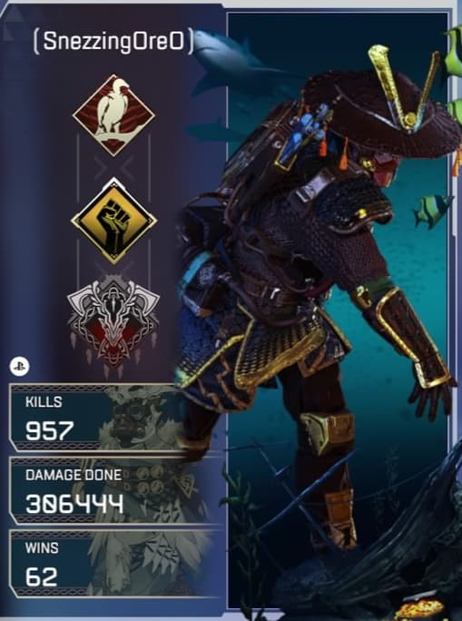
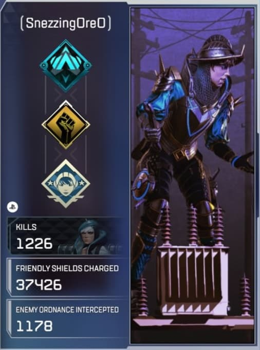
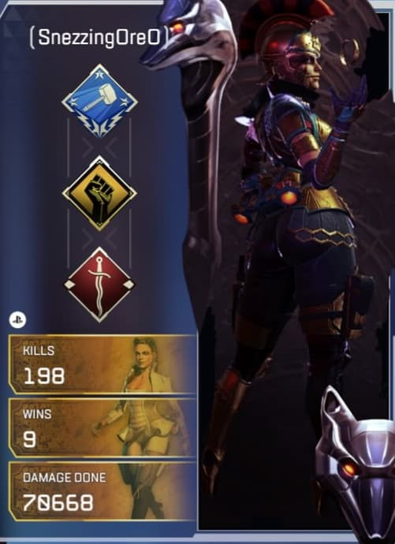
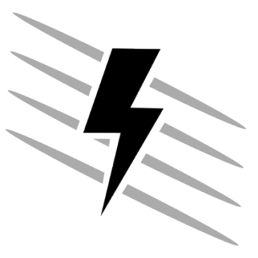
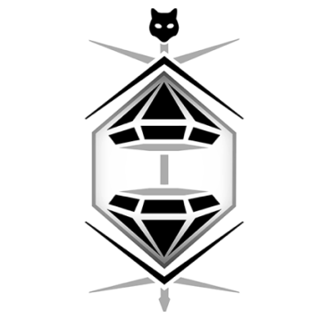

Bloodhound is a fast-paced Recon Legend great at pushing the enemy in their base. Tracker can be used to find where enemies have gone, and Eye of the Allfather will reveal hidden enemies and traps. Lastly, Beast of the Hunt causes Bloodhound to gain speed and highlights their enemies.
Bio:
Bloodhound is known across the Outlands as one of the greatest game hunters the Frontier has ever seen. The child of two engineers stationed at the New Dawn industrial plant on Talos, Bloodhound was taken in by their uncle Artur after a meltdown destroyed the facility and killed both their parents. Artur taught them the "Old Ways", a belief system that focuses on the glory of nature and rejects modern technology. Yet Bloodhound was constantly drawn to technological marvels, and ultimately used both new and old methods to take down a Goliath that preyed on the people of their village, forever changing their life’s path.
Bloodhound's unparalleled tracking skills are a boon to any team they join, helping them root out hidden opponents and track enemy movements. Calling on Earth's Old Norse Gods to guide them, Bloodhound believes that destiny is a path that has already been laid out, eventually carrying all to their death. But with that knowledge comes strength, because until that day comes, Bloodhound knows they can't be stopped.

A Defensive Legend with a slower playstyle, Wattson is great at defending chokepoints and small interior areas. Her Perimeter Security Fences not only slow but damage and reveal enemies who attempt to storm your location by passing through them. Her Passive, Spark of Genius, fully recharges her ultimate ability with any Ultimate Accelerant and also slowly regenerates her own shields. When it is ready, her ultimate, Interception Pylon will stop all grenades, missiles, or anything else throwable from breaking into your base and will also recharge your shields within a certain radius.
Bio:
Natalie Paquette is a familiar face in the Apex Games, though for a different reason than most. Daughter of the Games’ lead electrical engineer Luc Paquette, she studied his manuals to stay close to him and discovered her calling at a young age. Though she could be completely distracted one moment and hyper-focused the next, electricity grounded her – its ordered, predictable flow made sense in a way the rest of the world didn’t.
She devoured every book she could on the subject, and eventually became such a skilled engineer that she was commissioned by the Syndicate to build the Apex Games’ Modified Containment Ring. Unfortunately, her father died the day it was revealed, leaving her alone. At her lowest moment, a group of competitors invited her to return to the arena with them, assuring her she would always have a home. She now fights alongside her friends in the arena she helped build, destroying incoming missiles, recharging shields, creating fences, and using her pylon to silence fights that get too loud. Nobody knows the arena better than Wattson – anyone who underestimates her is in for a shock.

A Support Legend specializing in providing the squad with the highest quality loot, she can use her passive Eye for Quality to immediately see high-quality loot and ping it too for her teammates while her ultimate Black Market Boutique allows her squad to quickly see all the loot in the area and retrieve them from a safe place. Her tactical, Burglar's Best Friend gives her a jump drive that she can use to teleport to higher places or through obstacles.
Bio:
When Loba was nine, she looked on as simulacrum hitman Revenant killed her parents. Left with nothing, Loba was given to a foster family. But like her mother and father, she quickly found out she was good at being a thief. She started with picking pockets and as her skills improved, Loba used every tool at her disposal to lift herself from the gutter. Everything changed when she broke into a supposedly impenetrable facility and got her hands on the Jump Drive tech stored inside. With her new teleportation bracelet, the most secure and unattainable items were within her reach. So was her dream of living the high life.
Rumors spread across the Outlands: if you wanted something valuable -and well guarded- Loba's who you go to. She was almost able to put her past behind her. But when Revenant joined the Games, her past catapulted into her future. Desperate to find a way to kill him, she found out the truth about the Simulacrum with help from her friend Jaime and successfully sabotaged a facility full of Revenant bodies, bringing Skull Town and Thunderdome crashing down in the process. However, she learned it was just one of many such factories hidden across the Frontier. Now, she's joined the Games to find a way to end him for good. It doesn't hurt that the Arenas are brimming with treasures just waiting to be plucked.
Revenge will come, if fortune favors her. In the meantime, some shiny things have caught her eye.

|
 |
 |
|
Bloodhound
|
Wattson
|
Loba
|